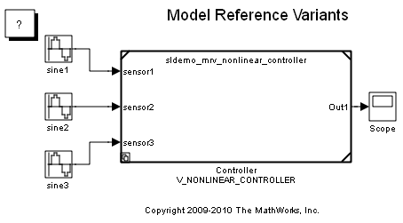
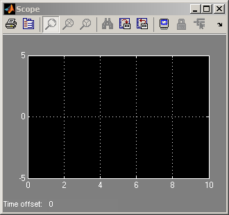
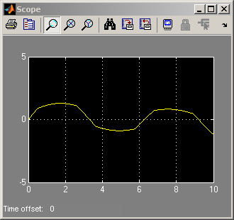
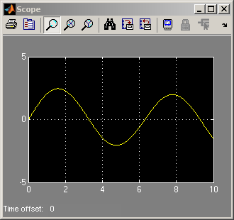

Model Reference Variants
This demo illustrates model reference variants. A Model block is used to reference one Simulink® model from another Simulink model. A Model block can have different variants. A variant describes one of N possible modes a Model block can operate in. Each variant of the Model block references a specific model with optional model-specific arguments. Only one variant is active for simulation. You can switch the active variant of a Model block by changing the values of variables in the base workspace, or by manually overriding variant selection using the Model block dialog.
Contents
Demo Requirements
During this demo, Simulink and Real-Time Workshop® may generate code in a Simulink project directory created in the current working directory. If you do not want to (or cannot) generate files in this directory, you should change the working directory to a suitable directory.
Overview of Model Variants
A Model block is used to reference one Simulink model (the child model) from another Simulink model (the parent model). A Model block can have different variants. The variants comprise a set of models that have the potential to be referenced by the Model block. In this example, there are two models that are potentially referenced by the Model block named Controller.
Each variant in a Model block is associated with a Simulink.Variant object. Simulink.Variant objects are created in the MATLAB® base workspace. For example:
V_NONLINEAR_CONTROLLER=Simulink.Variant('CTRL=1');
where the constructor argument ('CTRL=1') defines the condition when the variant is active. In this case, defining:
CTRL=1
in the base workspace would activate the V_NONLINEAR_CONTROLLER variant. The condition argument can be a simple expression consisting of scalar variables, enumerations, equality, inequality, &&, ||, and ~. Parenthesis () can be used for precedence grouping.
For a given Model block, one variant is active during simulation. The active variant is determined by evaluating the variant object conditions in the MATLAB base workspace. Alternatively, you can instruct the Model block to use a specific variant by selecting the Override variant conditions and use following variant checkbox.
Specifying Variants for a Model Block
The model used in this demo requires the following variables be defined in the MATLAB base workspace:
V_NONLINEAR_CONTROLLER=Simulink.Variant('CTRL==1');
V_SECOND_ORDER_CONTROLLER=Simulink.Variant('CTRL==2');
CTRL=1;
Opening the demo model sldemo_mdlref_variants will run the PreLoadFcn defined in File -> ModelProperties -> Callbacks. This will populate the base workspace with the variables for the Model block named Controller:
V_NONLINEAR_CONTROLLER =
Simulink.Variant
Condition: 'CTRL==1'
V_SECOND_ORDER_CONTROLLER =
Simulink.Variant
Condition: 'CTRL==2'
CTRL =
1
  Figure 1: The demo model, sldemo_mdlref_variants
Right-click the model block Controller and select the menu item ModelReference Parameters... to open the Model block dialog.
The dialog specifies two potential variants. The two variants are in turn associated with the two Simulink.Variant objects V_NONLINEAR_CONTROLLER and V_SECOND_ORDER_CONTROLLER, which exist in the base workspace. These objects have a property named Condition, an expression that evaluates to a boolean and that determines which variant is active. The Condition is also shown in the Model block dialog. In this example, the Condition's of V_NONLINEAR_CONTROLLER and V_SECOND_ORDER_CONTROLLER are CTRL == 1 and CTRL == 2, respectively. The variable CTRL resides in the base workspace, and may be a standard MATLAB variable or a Simulink.Parameter.
Switching Active Variants
To simulate using the sldemo_mrv_nonlinear_controller, define:
CTRL=1
in the base workspace and then simulate the model.
Figure 2: Simulation using the sldemo_mrv_nonlinear_controller variant
To simulate using the sldemo_second_order_controller, define
CTRL=2
in the base workspace and then simulate the model.
Figure 3: Simulation using the sldemo_mrv_second_order_controller variant
Enumerations and Reuse
The sldemo_mdlref_variants_enum model illustrates Simulink.Variant capabilities:
1. Enumerations: MATLAB enumeration classes can be used to improve readability in the conditions of the variant object.
2. Reuse: Simulink.Variant objects can be reused in different Model blocks.
This demo requires the following variables be defined in the MATLAB base workspace:
VE_NONLINEAR_CONTROLLER=Simulink.Variant('E_CTRL==sldemo_mrv_CONTROLLER_TYPE.NONLINEAR')
VE_SECOND_ORDER_CONTROLLER=Simulink.Variant('E_CTRL==sldemo_mrv_CONTROLLER_TYPE.SECOND_ORDER')
E_CTRL=sldemo_mrv_CONTROLLER_TYPE.SECOND_ORDER
VE_PROTOTYPE=Simulink.Variant('E_CURRENT_BUILD==sldemo_mrv_BUILD_TYPE.PROTOTYPE')
VE_PRODUCTION=Simulink.Variant('E_CURRENT_BUILD==sldemo_mrv_BUILD_TYPE.PRODUCTION')
E_CURRENT_BUILD=sldemo_mrv_BUILD_TYPE.PRODUCTION
In these Simulink.Variant's, we use the enumeration classes, sldemo_mrv_BUILD_TYPE.m, and sldemo_mrv_CONTROLLER_TYPE.m within the Simulink.Variant Condition properties to improve readability.
The VE_PROTOTYPE and VE_PRODUCTION Simulink.Variant objects are reused across the three filter Model blocks, Filter1, Filter2, and Filter3.
Opening the demo model sldemo_mdlref_variants_enum will run the PreLoadFcn defined in File -> ModelProperties -> Callbacks. This will populate the base workspace with variables for the Model blocks, which are displayed in the MATLAB Command Window:
VE_NONLINEAR_CONTROLLER =
Simulink.Variant
Condition: 'E_CTRL==sldemo_mrv_CONTROLLER_TYPE.NONLINEAR'
VE_SECOND_ORDER_CONTROLLER =
Simulink.Variant
Condition: 'E_CTRL==sldemo_mrv_CONTROLLER_TYPE.SECOND_ORDER'
E_CTRL =
SECOND_ORDER
VE_PROTOTYPE =
Simulink.Variant
Condition: 'E_CURRENT_BUILD==sldemo_mrv_BUILD_TYPE.PROTOTYPE'
VE_PRODUCTION =
Simulink.Variant
Condition: 'E_CURRENT_BUILD==sldemo_mrv_BUILD_TYPE.PRODUCTION'
E_CURRENT_BUILD =
PRODUCTION